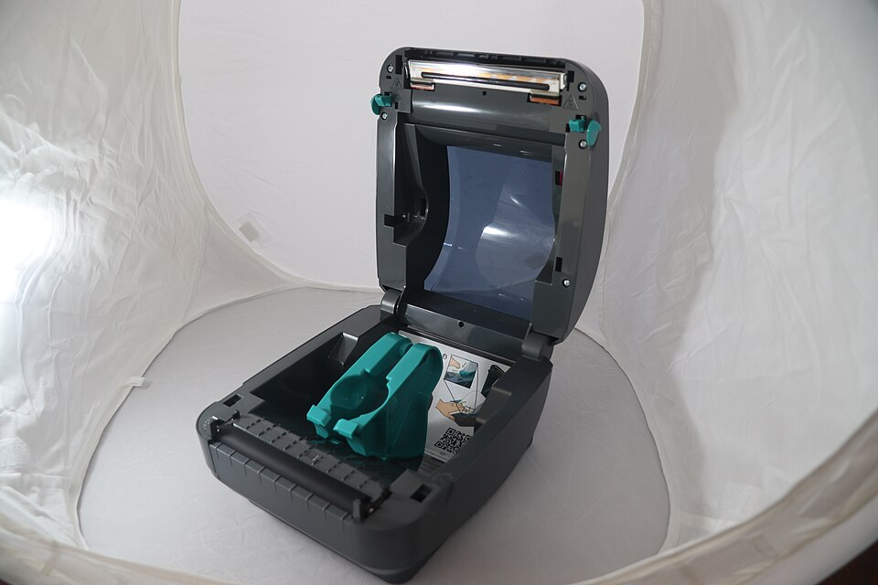
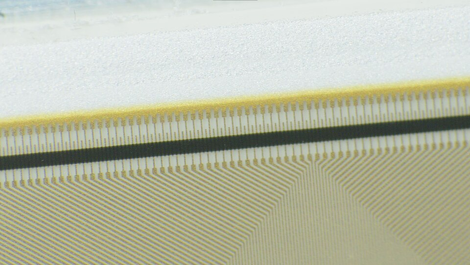

Clean and replace a Zebra ZD421 platen roller
Use the printer's own samples to tell a media calibration problem from a repeating platen defect, then service the correct direct-thermal model.
Work with a known tape path and reference roll
The worked unit is a Zebra ZD421D direct-thermal printer with a standard platen and ordinary liner-backed direct-thermal stock. Confirm the exact unit, resolution, options and supply at intake. A thermal-transfer model needs its correct ribbon. A linerless platen has a different surface and cleaning procedure. Use the instructions for the actual model. Have a reference roll, the customer's media, approved cleaning supplies, a ruler, a scanner and a labelled A/B job card.

Photo by Jiří Sedláček, resized with labels added. Original photo · CC BY-SA 4.0.


Photo by Gravis, scaled with labels. Original photograph · CC BY-SA 4.0.

Watch. Locate the two bearing releases and observe which end of the platen engages the drive. The maintenance video separates the printhead, platen and media sensor cleaning operations. Zebra replaces the ZD421-family platen · Zebra cleans direct-thermal desktop printers.
Print a reference before touching a roller
Record media width, length, gap or black mark, printer resolution, speed and darkness. Verify the roll is loaded with the printable face in the correct direction. On standard ZD421 controls, after loading media use the manufacturer SmartCal procedure with Pause and Cancel. Print a configuration report to capture the settings. Save the values before touching the customer profile. Zebra SmartCal procedure · Model support and configuration report.
On sufficiently wide suitable media, follow Zebra's FEED self-test to generate its built-in print quality report at different settings. Keep the reported speed and darkness on each comparison label. Compare five consecutive labels and mark the feed direction. A built-in defect survives the change from a PC print job. A fault that appears only on one PC template should be checked at the driver, image and label-size settings first. Zebra's print quality report steps.
Try the customer's roll and the known-good roll separately. Recalibrate as required for each type. A line at a fixed position across the print width that runs in the feed direction points toward the head or something consistently contacting that part of the media. A defect recurring along the feed at a spacing close to the roller circumference points toward the platen or something that repeats with it. The location and spacing guide inspection. They are not part diagnoses.
On a set of sample labels, marks repeat about every 38 mm along the web. A measured 12 mm roller has an approximate circumference of 38 mm. This comparison gives you a reason to inspect the roller and collect another sample after cleaning. The dimensions are example readings, not Zebra specifications. Take several intervals on the same web and divide their total length by the count so your mark spacing is easier to measure.
Clean, compare, then replace if needed
Power off, disconnect the external supply, allow the head to cool and remove the stock. Inspect the smooth head line and roller without scraping them. Clean each area with the technique and consumable Zebra gives for that exact model. Standard and linerless platens have different care instructions. Let cleaned parts dry before powering the printer. Zebra maintenance instructions by part and model.
Reassemble and repeat the same samples with the same roll, speed and darkness. If cleaning removes the mark, document it and stop. If a recurring mark remains and you can match it to damage or slipping on the roller, obtain the exact roller variant and follow Zebra's replacement demonstration. Remove the stock, release the two bearings as shown, lift the roller without levering on the media path, then check the drive end and both locks on the replacement.
If the fixed white gap remains with clean sample media and a clean head, document the evidence and use the approved printhead service path. Check the head and connector according to the guide before pricing the repair. Excessive darkness can close the gaps in a barcode and mask the original issue in a visual check.
Hand back samples that prove the repair
Print a consecutive run with the customer's agreed stock. Keep the test count, feed errors, repeat mark spacing and settings. Scan a representative sample at the customer's intended station and record the decoded text. Use a compliant verifier if the job specifies a formal barcode grade. A pass on one shop scanner can still be enough for a narrowly agreed handover test. T53 dot pitch, heat, sensing and barcode quality · GS1 on formal barcode verification.